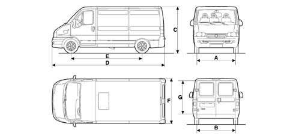
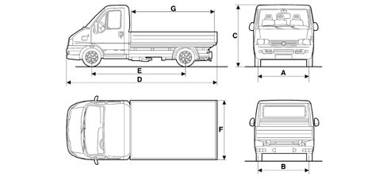

VEHICLE DIMENSIONS
- Path
- Technical Data > DESIGN SPECIFICATIONS AND DESCRIPTION > VEHICLE DIMENSIONS
- Kind
- technical data / specifications
- Applies to
- all engines; all production periods
- Interactive page
- https://sloeber94.github.io/elrnDB-fDct/en/#/244000010
Applies to: all engines; all production periods
Height is measured with vehicle unladen
Van version
VERSIONS | MAXI | ||
|---|---|---|---|
SHORT WHEELBASE | MEDIUM WHEELBASE | LONG WHEELBASE | |
A (mm) | 1720 | 1720 | 1720 |
B (mm) | 1720 | 1720 | 1720 |
C (mm) | 2160-2480 | 2160-2735 | 2480-2860 |
D (mm) | 4749 | 5099 | 5599 |
E (mm) | 3200 | 3200 | 3700 |
F (mm) | 2024 | 2024 | 2024 |
G (mm) | 1441-1760 | 1441-2060 | 1441-1760 |
Dimensions change depending on the version within the above limits

VERSIONS | 11 | 15 | ||||||||
|---|---|---|---|---|---|---|---|---|---|---|
SHORT WHEELBASE | MEDIUM WHEELBASE | SHORT WHEELBASE | MEDIUM WHEELBASE | LONG WHEELBASE | ||||||
A (mm) | 1720 | 1720 | 1720 | 1720 | 1720 | |||||
B (mm) | 1720 | 1720 | 1720 | 1720 | 1720 | |||||
C (mm) | 2154-2470 | 2150-2725 | 2150-2470 | 2150-2725 | 2470-2850 | |||||
D (mm) | 4749 | 5099 | 4749 | 5099 | 5599 | |||||
E (mm) | 2850 | 3200 | 2850 | 3200 | 3700 | |||||
F (mm) | 2024 | 2024 | 2024 | 2024 | 2024 | |||||
G (mm) | 1441-1760 | 1441-1760 | 1441-1760 | 1441-2016 | 1441-1760 | |||||
Truck version
Dimensions change depending on the version within the above limits
(*) A 2180 mm wide box may be supplied as an option

VERSIONS | 11 | 15 | MAXI | |||
|---|---|---|---|---|---|---|
SHORT WHEELBASE | SHORT WHEELBASE | MEDIUM WHEELBASE | LONG WHEELBASE | MEDIUM WHEELBASE | LONG WHEELBASE | |
A (mm) | 1720 | 1720 | 1720 | 1720 | 1720 | 1720 |
B (mm) | 1720 | 1720 | 1720 | 1720 | 1720 | 1720 |
C (mm) | 2100 | 2100 | 2100 | 2100 | 2125 | 2125 |
D (mm) | 4831 | 4831 | 5181 | 5861 | 5181 | 5861 |
E (mm) | 2850 | 2850 | 3200 | 3700 | 3200 | 3700 |
F(*)(mm) | 2024 | 2024 | 2024 | 2024 | 2024 | 2024 |
G (mm) | 2585 | 2585 | 2080-2935 | 2585-3435 | 2080-2935 | 2585-3435 |